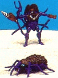

Drill
Bit
Drill
Bit

Allegiance
: Predacon
Size
: Basic
Difficulty of Transformation
: Medium
Color Scheme
: Purple, silver, and
transparent brown, with some light blue
Rating
: 6.3
Beast mode is a weevil.
This mode is rather poor-looking with a LOT of extras on his underside
and with not that many movable joints, although his insect legs can hold
him up a little. The detailing in this mode is very nice, especially with
the combination of translucent brown on his back.
Robot mode is okay.
His shell looks rather big in the back and his insect legs can get in the
way a lot, though. His drill on his right hand can rotate by a little wheel
on his arm and is a nice touch. His hands have a sort of brass knuckles
on them and look very cool.
A nice transformer in
robot, but not in beast, mode. Also, a fairly hard transformer to transform,
especially for a basic.
Drill Bit Bio
:
FUNCTION:
Infantry
Arising from miles beneath the planet's
surface, Drill Bit digs his way up through the
ground to surprise Maximal enemies when
they least expect it. His diamond-tipped,
titanium-alloy destruction drill can
bore through anything - even the Maximals' latest high-tech battle armor!
Drill Bit lives underground in a subterranean series of twisting tunnels
that go straight to the mysterious planet's center, where molten lava mixed
with Energon crystals fuels his constant thirst for more power.
Strength: 6.0
Speed: 2.0
Rank: 4.0
Firepower: 3.0
Intelligence: 3.0
Endurance: 8.0
Courage: 7.0
Skill: 4.0
Review by Beastbot
Back to Beast
Wars Toys Index